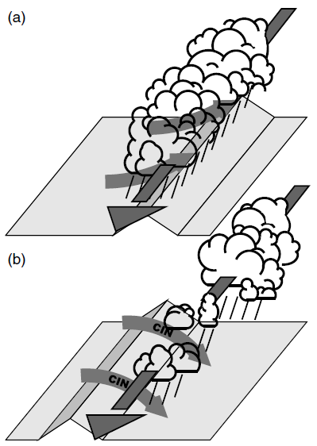

Schematic illustration of the interaction of a pre-existing convergence line, involving a pre-existing convective precipitation band, with a flow-parallel aligned mountain ridge. The position and advection of the convergence line/precipitation band is indicated by the dark arrow. (a) Enhancement and (b) suppression of the band’s continuity and intensity occur if it is located (a) upstream and (b) downstream of the crestline with respect to the cross-barrier inflow (grey curved arrows) into the convergence line. In (b), convective inhibition results from stabilising descending inflow.
The disastrous impact of flash floods on humans and their environment motivated us to explore the role of embedded convection during a particularly heavy precipitation event. The physical mechanisms of this event are investigated in order to explain how convective cells organize around mesoscale mountain ridges to cause locally enhanced rainfall. Radar and surface observations are exploited and simulations are carried out using WRF to study the response of low-level convergence lines upon advection over mesoscale mountain ridges.
Why do we care?
In this paper our interest focuses on the convective activity embedded in the moist flow approaching the Alpine massif during the early stage of this heavy precipitation event. Previous studies illustrated the capability of embedded cellular and banded convection to enhance precipitation locally. However, the predictability of convective precipitation and the physics of its initiation are still less consolidated than stably stratified upslope precipitation (which dominated this preciptiation event in the later stage). The aim of the study is to detect the mechanisms of convective initiation and the factors that controlled the banded structure of convective cells during this period. In particular, the impact of topographic features embedded in the low-mountain terrain of the Alpine foreland is explored.
How do we approach this?
First of all, a thorough comparison of a reference simulation with observations is conducted. Thereafter, numerical experiments with partly removed or flattened orography and others with additional idealised orographic obstacles are performed. This allows us to identify the importance of individual topographic obstacles for the triggering and the organization of convection into bands.
What do we find?
Our key findings show that intense local rainfall resulted from the lifting of a convective band that formed in a low-level convergence line. WRF simulations capture these banded signals that are observed also in radar and gauge measurements. Depending on the position of the convergence line with respect to a mesoscale ridge (Swabian Alp), the horizontal flow into the convergence line may either enhance or weaken the buoyancy-driven dynamics of these bands (see Figure left). The specific constellation during this event supported an enhancement (panel (a)). The weakening mode is characterized by a subsiding cross-ridge inflow that leads to a stabilization of the air above the convergence line (panel (b)). As a result, the convective band gets scattered and weakened in its structure upon advection over the ridge. Such conceptual mechanisms are crucial for a better understanding of precipitation distributions over complex terrain.
{kind=link}